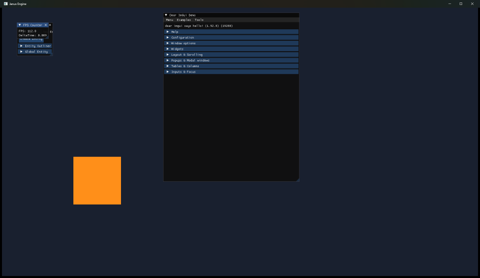

Loading...
Searching...
No Matches
Hello Janus
The smallest program that puts something on screen: a camera, a light, a background and one sprite.

The orange square, with the engine's FPS Counter, Entity Debugger and Dear ImGui Demo windows
This is the program walked through in Your first game. It shows the four things every Janus game needs before anything is visible (The minimum for a visible game) and the order of the engine calls (Engine core).
Textures without files
Registering a texture made in codeexamples/modules/HelloJanus.cpp
// Creates a square, solid-white texture in memory and registers it with the
// Filesystem module under AssetPath, as if it were an image file in Resources/.
static void RegisterSolidTexture(const std::string& AssetPath, int Size) {
SDL_Surface* surface = SDL_CreateSurface(Size, Size, SDL_PIXELFORMAT_ABGR8888);
const Uint32 white = SDL_MapSurfaceRGBA(surface, 255, 255, 255, 255);
SDL_FillSurfaceRect(surface, nullptr, white);
TObjectPtr<Graphics::STexture2D> texture;
texture->Surface = surface;
texture->Width = static_cast<float>(Size);
texture->Height = static_cast<float>(Size);
texture->AssetPath = AssetPath;
TObjectPtr<Filesystem::SAssetData> assetData;
assetData->AssetPath = AssetPath;
assetData->AssetName = AssetPath;
assetData->AssetType = Filesystem::TEXTURE;
assetData->ObjectData = texture; // already "loaded": LoadFile() returns it
Filesystem::RegisterAssetData(assetData);
}
main()
// The renderer loads "CollisionTexture" while the engine starts,
// so register it first.
RegisterSolidTexture("CollisionTexture", 8);
RegisterSolidTexture("White", 8);
flecs::world& world = ECS::GetWorld();
// Camera: shows world units (0,0) to (320,180). Boundaries of 0 pin it in place.
// The light on the same entity is large enough to light the whole screen.
world.entity("Camera")
.set<FTransformComponent>({})
.set<FCameraComponent>({ .CameraSize = {320, 180}, .Boundaries = {0, 0, 0, 0} })
.set<FLightComponent>({ .Radius = 100.f, .Intensity = 2.4f });
// Background: a full-screen sprite on the Background layer.
world.entity("Background")
.set<FTransformComponent>({})
.set<FTexture2DComponent>({
.Sprite = { .SpriteSheet = {"White"} },
.TextureSize = {320, 180},
.Color = {0.10f, 0.12f, 0.18f, 1.f} })
.set<FRenderingComponent>({ .RenderLayer = Renderer::Background });
// A 32x32 orange square. Location is its top-left corner, in world units.
world.entity("Square")
.set<FTransformComponent>({ .Location = {48, 100, 0} })
.set<FTexture2DComponent>({
.Sprite = { .SpriteSheet = {"White"} },
.TextureSize = {32, 32},
.Color = {1.f, 0.55f, 0.1f, 1.f} })
.set<FRenderingComponent>({ .RenderLayer = Renderer::Entities });
Log::Hello::Info("Hello, Janus! Close the window to quit.");
Engine::Run(); // returns when the window is closed
// Known issue: returning from main() after TeardownPlugins() crashes in static
// destructors.
// Exit without running them (the engine has already flushed its logs).
std::quick_exit(0);
The program ends with std::quick_exit(0) instead of returning, to avoid the crash after shutdown described in Shutdown.